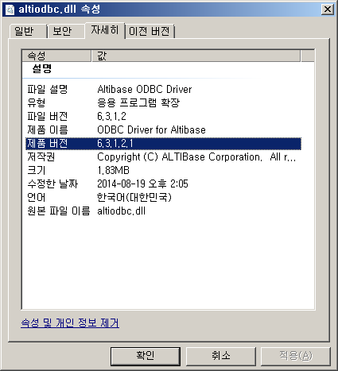

버전
Altibase 모든 버전
현상
Altibase 트레이스 로그 altibase_boot.log 에 아래와 $ALTIBASE_HOME/trc/altibase_boot.log 에 다음 에러메시지가 기록됨.
ERR-7101d(errno=0) Protocol header error.(TCP 127.0.0.1:13036) Protocol processing failed. Close connection...
원인
다음과 같이 altierr 유틸리티를 이용하여 해당 에러에 대한 설명을 확인할 수 있습니다.
$ altierr 0x7101D
0x7101D ( 462877) cmERR_ABORT_PROTOCOL_HEADER_ERROR Protocol header error.(<0%s>)
# *Cause: Protocol header error
# *Action: Please send a bug report to the vendor.
이 에러는 알티베이스 서버와 호환되지 않는 버전의 클라이언트에서 서버로 접속 시도 시 서버의 altibase_boot.log에 기록되는 메시지입니다.
이력을 남기는 메시지로, 알티베이스 서버 운영에는 영향이 없습니다.
조치
이 에러메시지가 계속해서 기록된다면 접속 시도하는 클라이언트를 찾아서 서버와 호환 가능한 버전의 클라이언트로 재설치하시기 바랍니다.
참고
- 알티베이스 5.3.3 미만 버전에서는 서버와 클라이언트의 cm protocol version이 동일해야 클라이언트에서 서버로 접속이 가능합니다.
- 알티베이스 5.3.3 이상 버전부터는 서버와 클라이언트의 하위호환성을 보장하여 cm protocol version 상관없이 클라이언트에서 동일버전 또는 그 이상 버전의 서버로 접속이 가능합니다.
그러나 반대의 경우, 즉 서버보다 클라이언트의 버전이 높은 경우는 접속되지 않습니다. - 여기에서 말하는 버전은 제품버전의 앞 3자리를 의미합니다.(4번째 이하 자리의 패치버전은 버전 체크시 상관 없습니다.)
# 서버 및 클라이언트 버전에 따른 접속 예제
구분 | 서버 버전 | 클라이언트 버전 | 접속 결과 | 비고 |
|---|---|---|---|---|
서버 버전 > 클라이언트 버전 | 6.3.1 | 5.3.3 | 성공 | 5.3.3 이상 버전에서 하위호환성 보장 |
서버 버전 > 클라이언트 버전 | 6.3.1 | 4.3.9 | 실패 | 서버, 클라이언트 모두 5.3.3 이상 버전일 때 하위호환성 보장. |
서버 버전 < 클라이언트 버전 | 6.1.1 | 6.3.1 | 실패 | 클라이언트 버전이 높은 경우는 알티베이스 버전 상관없이 접속 실패. |
# 서버 및 클라이언트 버전 확인 방법
서버 버전 확인 방법
$ altibase -v
version 5.1.5.68 XEON_LINUX_redhat_Enterprise_AS4-64bit-5.1.5.68-release-GCC3.4.6 (xeon-redhat-linux-gnu) Jan 5 2010 21:17:22, binary db version 5.1.2, meta version 5.3.3, cm protocol version 5.4.5, replication protocol version 5.2.1클라이언트 버전 확인 방법
# 5.3.3 미만 버전
$ sesc -v
SES C/C++ Precompiler 3 Ver 5.1.5.68 XEON_LINUX_redhat_Enterprise_AS4-64bit-5.1.5.68-release-GCC3.4.6 (xeon-redhat-linux-gnu) Jan 5 2010 21:17:22
# 5.3.3 이상 버전
$ apre -v
Altibase Precompiler2(APRE) Ver.1 6.3.1.0.9 X86_64_LINUX_redhat_Enterprise_ES4-64bit-6.3.1.0.9-release-GCC3.4.6 (x86_64-unknown-linux-gnu) Mar 20 2014 18:19:25JDBC Driver를 이용한 버전 확인 방법
$ java -jar $ALTIBASE_HOME/lib/Altibase.jar
JDBC Driver Info : Altibase Ver = 6.3.1.0.9 for JavaVM v1.4, CMP:7.1.1, Mar 20 2014 17:07:25WINDOWS 환경에서 ODBC 라이브러리를 이용한 버전 확인 방법
알티베이스 설치 디렉토리 (예. C:\Program Files (x86)\Altibase\altibase-server-6.3.1) 아래 lib 디렉토리에서
altiodbc.dll -> 속성 -> 자세히 -> 제품버전
{kind=link}